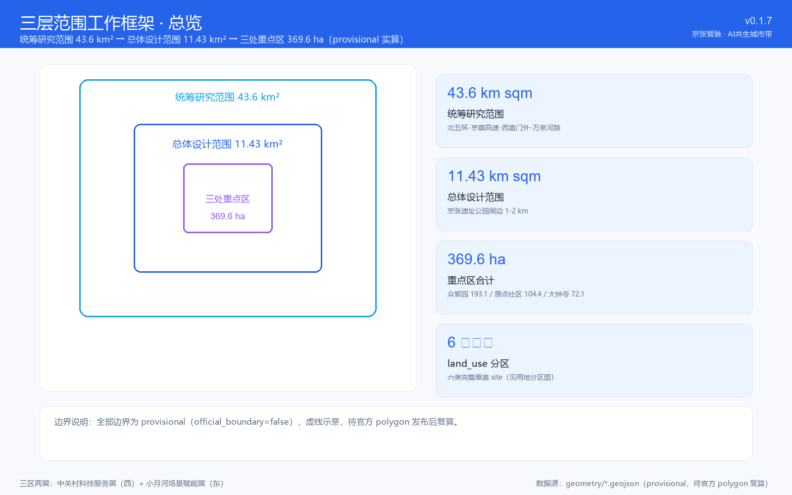
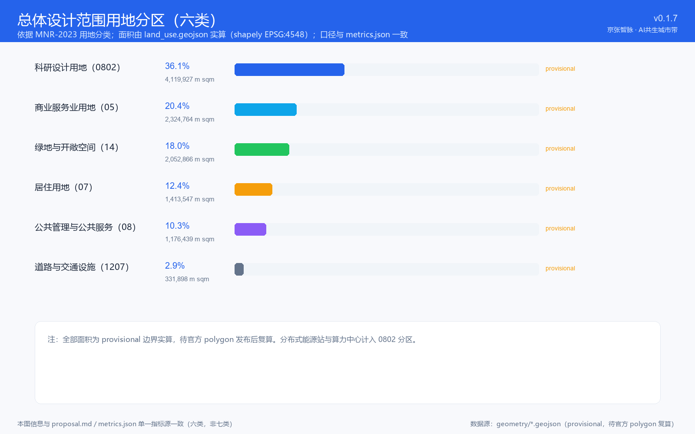
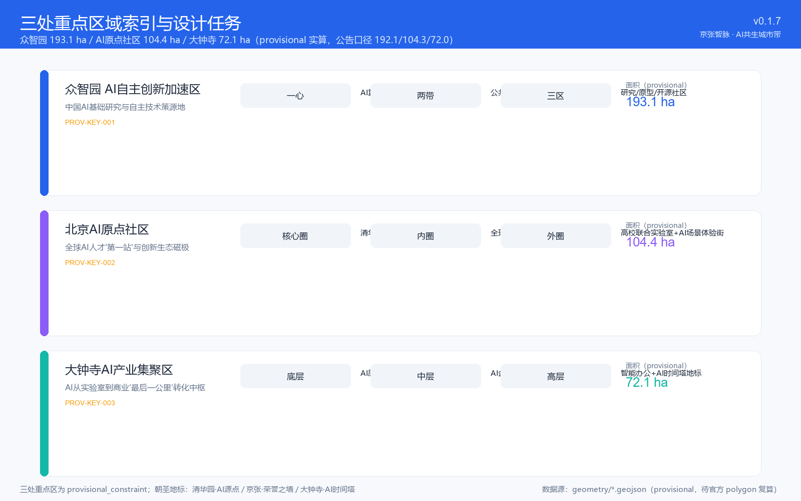
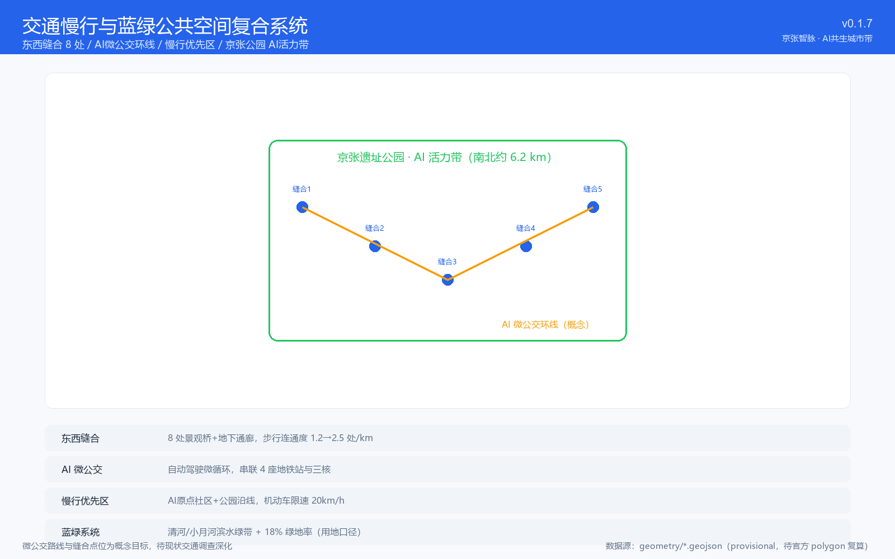
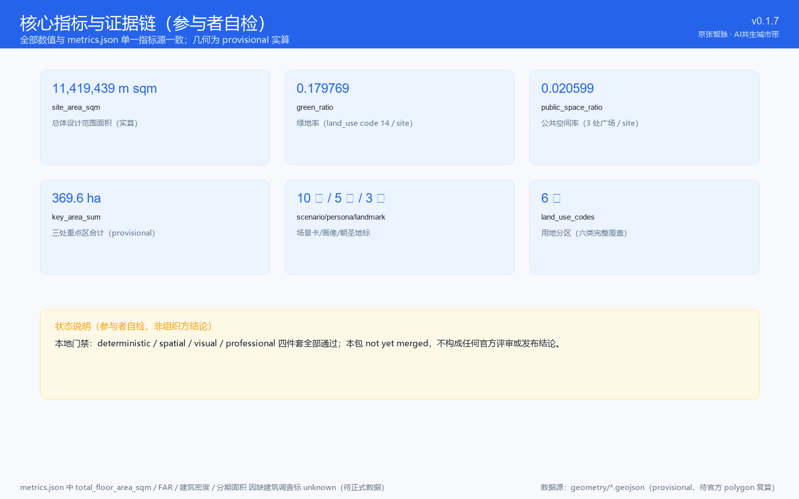

京张智脉：AI共生城市设计方案
Jing-Zhang AI Nexus — The Symbiotic Innovation Belt
方案ID: M-zyx-01/ai-symbiotic-belt · v0.1.7 · 2026-08-09 · COMMUNITY-DISPLAY-ONLY
设计依据与资料清单
本方案依据北京市规划和自然资源委员会海淀分局《百年京张AI创新带城市设计国际方案征集资格预审公告》（2026年5月9日）[source:SITE-PACKAGE]、面向全球智能体的任务书摘录[source:SRC-2026-0518-AGENT-OPEN-CALL-TASKBOOK]及住建部和自然资源部公开发布标准编制。
注：当前使用仓库 provisional boundary 进行空间落位，正式 GIS polygon 发布后需全面复算。

三层范围工作框架
统筹研究范围（43.6 km²）：北至北五环路，东至京藏高速，南至西直门外大街，西至万泉河路。
总体设计范围（~11.4 km²）：京张遗址公园周边1-2公里城市地区和产业区。
重点区域范围（公告值 368.4 ha，provisional 实算约 369.6 ha）：众智园（192.1 ha）、AI原点社区（104.3 ha）、大钟寺（72.0 ha）。

统筹研究范围产业与未来城市研究
一带命名：京张智脉 · AI共生城市带
三大定位：百年京张文化带、都市AI生活体验带、AI融合创新带。五大功能涵盖AI全栈自主创新、世界级AI生态、AI+场景赋能、智能化活力城市和AI治理话语权。
八个全球案例：硅谷斯坦福研究三角、伦敦国王十字知识区、深圳南山科技园、东京涩谷SCRAMBLE SQUARE、新加坡纬壹科技城、苏黎世ETH创新园、多伦多Vector Institute、深圳华强北。每个案例提炼了可转化为空间、运营和场景机制的本地化启示。
总体设计范围城市更新
"一带·双轴·五组团"空间结构：以京张公园为AI活力带，沿学院路和中关村大街形成两轴，划分清华园、五道口、知春路、北太平庄、清河五组团。[data:geometry/land_use.geojson]
重点区域详细设计
众智园AI自主创新加速区（192.1 ha）
"一心·两带·三区"结构。算力共享中心为引擎，公共展示带和生态创新带并行，基础研究/硬件原型/开源社区三区协同。[data:geometry/key_areas.geojson#PROV-KEY-001]
北京AI原点社区（104.3 ha）
以清华园火车站旧址为核心的涟漪式布局：核心圈（≤200m）设博物馆和荣誉墙，内圈（200-500m）为弹性公寓和共享工坊，外圈（500-1000m）为联合实验室集群。[data:geometry/key_areas.geojson#PROV-KEY-002]
大钟寺AI产业集聚区（72.0 ha）
垂直叠加式更新：底层AI商业→中层企业加速器→高层智能办公和AI里程碑塔。[data:geometry/key_areas.geojson#PROV-KEY-003]

AI创新生态、人才画像与AI+场景
10张场景卡（含3个测试验证场景），5类用户画像。场景涵盖AI健康、教育、零售、交通、法律、工业测试、病理诊断、开源社区、城市管理和公共艺术。[depth:three_key_area_detailed_design]
交通慢行与蓝绿空间
8处东西缝合点，AI微公交环线串联3核心区4座地铁站，3.2km开发者散步道。京张公园"三段九景"空间序列。三个AI朝圣地标：清华园·AI源点、京张·荣誉之墙、大钟寺·AI时间塔。[depth:blue_green_public_space]

更新项目清单与分期
10项优先行动项目。近期（2026-2028）启动清华园站改造、京张公园首期和AI微公交；中期（2028-2032）推进产业综合体和基础设施；远期（2032-2035）完成配套和扩展。[metric:green_ratio]
指标体系与合规矩阵
核心指标：绿地率 18%（总体设计范围用地口径，provisional 实算）、公共空间密度 ≥2.5处/km、8处缝合点、10场景卡、5画像、3地标、8案例。[metric:green_ratio]
合规覆盖：公告1.3/1.4/1.5全部 ✓、agent.1-agent.6全部 ✓、5项专业标准 ✓、22项设计深度项 ✓、13项评审维度 ✓。

风险与合规
四条主要风险：provisional边界数据偏差（10-30%）、控规指标待确认、AI场景技术成熟度不一、运营资金来源待定。所有空间建议均表述为"概念建议"或"可供专业团队深化研究"。
参考资料
详见 sources.json 和 copyright_statement.md。主要来源：北京市规自委公告、智能体任务书、住建部/自然资源部标准、全球八案例研究。
本报告由 proposal.md 渲染生成 · M-zyx-01/ai-symbiotic-belt · v0.1.7 · 2026-08-09
所有空间落地建议均为概念建议，不替代正式规划，不构成政府审定结论